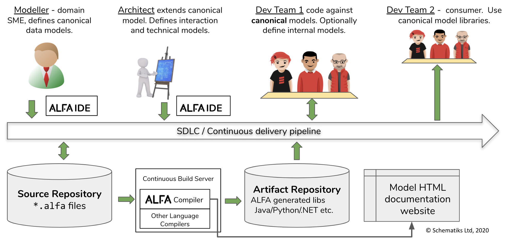

Introduction¶
ALFA is an easy-to-use data modelling language. It is agnostic of how the model will be implemented - i.e. it is not coupled to a particular programming language runtime, technology or framework. It focuses on letting modellers express their abstractions concisely close as possible to how they best see fit.
ALFA data models are written in text files. The ALFA compiler validates the model, and generates code for the supported programming languages or frameworks, along with documentation of the model. This can be an iterative process, bringing together modellers, developers, even users. ALFA becomes the common language to describe data regardless of technology or programming language.
An example showcasing number of ALFA features is shown below:
namespace sample trait Person { FirstName : string LastName : string DateOfBirth : date } enum ServiceLevelType { Standard Gold Platinum } key EmployeeKey { EmpId : uuid } entity Employee key EmployeeKey includes Person { HiredDate : date } entity Customer key ( Id : uuid ) includes Person { Email : string Accounts : set< string > DeclaredIncomes : list< double > RelationshipManager : EmployeeKey? // This is a calculated field ServiceLevel : ServiceLevelType = CustomerLib::serviceLevel( DeclaredIncomes ) // To validate, ensure customer is an adult assert IsAdult { let age = dateDiff( today(), DateOfBirth ) / 365 return if ( age < 18 ) some( "Customer ${FirstName} ${LastName} aged ${age} is not an adult" ) else none } } library CustomerLib { // The serviceLevel is calculated by adding all values and assigning a level based on total income range serviceLevel( vals : list< double > ) : ServiceLevelType { let total : double = reduce( vals, 0.0, (acc, i) => acc + i ) return if ( total < 100000 ) ServiceLevelType.Standard else if ( total < 1000000 ) ServiceLevelType.Gold else ServiceLevelType.Platinum } } service CustomerSvc { getCustomerByEmail( email : string ) : Customer? }
 Test drive a live instance of ALFA web-based tools using the example above - https://github.com/alfa-demo/alfa-sample-project
Test drive a live instance of ALFA web-based tools using the example above - https://github.com/alfa-demo/alfa-sample-project
Features¶
A summary of the main features is listed below.
- Domain specific language to express data models with minimalist and clear syntax.
- Ability to create fully documented strongly typed data models.
- Compiler that will perform extensive compile-time static analysis, and accurately report all errors, if any.
- Assert data validation rules to enforce DQM (Data Quality Management) in applications using ALFA.
- Extensible type definition system to allow composing derived types including templated types.
- Ability to express complex default values for fields of any type, including user-defined types and collections.
- Describe services (APIs) using modelled objects.
- Provision to define versions of service and type definitions.
- Code generators to create programming models/APIs from the ALFA data model.
- Development, packaging and build tools to be used as part of a model driven, iterative, rapid development process.
ALFA Files¶
ALFA has 3 type of file artifacts - model files, project files, module files.
- ALFA model files are identified by their file extension
.alfa. ALFA files can contain one or many model definitions. - ALFA project files are created with the
.alfa-proj.yamlor.alfa-proj.jsonextension. Project files contain settings for the compiler and dependencies to other modules. - Compiled ALFA files and a project file can be used to create a ‘module’. A module is created as a
.alfa-mod.zipfile.
ALFA Generated Code¶
Once a model is successfully compiled, it can be used to generate code for a target language or framework. For example a Java POJO model, which depends on an ALFA Java runtime library, containing various utility classes such as JSON serialisers.
In addition to generated code, ALFA generates model documentation in HTML using embedded comments as documentation with navigable dependencies and links to usages. The documentation forms an integral part of the modeller’s toolset to share ideas and knowledge.
The ALFA compiler and toolset can be incorporated into a continuous delivery pipeline where code and documentation generation, and upload of artifacts to repositories can happen as part of the pipeline. Any breaking changes are caught at compile time before the code gets promoted.
ALFA Usage Example¶
ALFA does not mandate a particular Software Development Lifecycle (SLDC) or development principles. Users can easily incorporate ALFA into their existing SLDC and Data Model Governance processes and guidelines.
The diagram below shows a typical usage scenario of an organisation that has integrated ALFA into their SDLC.
{kind=link}